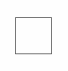
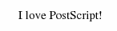
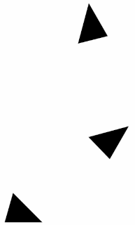
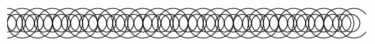
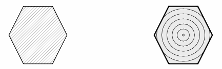

Задача — написать интерпретатор ограниченного подмножества формального языка PostScript. Интерпретатор должен представлять из себя оконное приложение, которое получает в аргументах командной строки путь к файлу со скриптом на языке PostScript, и затем показывает в окне изображение — результат интерпретации скрипта.
Интерпретируемый язык PostScript разработан для использования в принтерах как альтернатива растровым изображениям. Вместо объёмной карты пикселей принтер может получить небольшую серию текстовых команд, и интерпретировать их для получения графического рисунка, который затем будет напечатан.
В данном примере однострочные комментарии начинаются с символа “%”:
100 100 moveto % перемещаем начальную точку к левому нижнему углу прямоугольника
172 100 lineto % добавляем к фигуре отрезок, ведущий в правый нижний угол
172 172 lineto % добавляем к фигуре отрезок, ведущий в правый верхний угол
100 172 lineto % добавляем к фигуре отрезок, ведущий в левый верхний угол
closepath % добавляем к фигуре отрезок, ведущий назад к начальной точке
stroke % рисуем по контуру последнюю заданную фигуру
showpage % печатаем страницу и затем выталкиваем из принтера
Заметим, что в PostScript команда появляется после её аргументов. Такой формат записи выражений называется обратной польской нотацией (в честь польского математика Яна Лукашевича), и он хорош тем, что не требует скобок для указания приоритета операций.
При интерпретации скрипта получим прямоугольник внизу страницы:

Открытый кроссплатформенный пакет программ Ghostscript содержит в себе интерпретатор PostScript, способный в том числе вывести результат выполнения скрипта в JPEG или в PNG. На Unix-платформах можно использовать вспомогательный Shell-скрипт ps_to_png.sh:
#/usr/bin/env bash
# Интерпретирует переданный параметром скрипт на языке PostScript.
# Результат выводит как 32-битный PNG с alpha-каналом в "page-%d.png",
# где '%d' - номер страницы.
# См. также документацию по использованию ghostscript из командной строки:
# http://www.ghostscript.com/doc/doc/Use.htm
gs "-sDEVICE=pngalpha" "-sOutputFile=page-%d.png" -dBATCH -dNOPAUSE "$@"
Использовать ps_to_png.sh из оболочки командной строки можно так:
$ ./ps_to_png.sh rect.ps
GPL Ghostscript 9.18 (2015-10-05)
Copyright (C) 2015 Artifex Software, Inc. All rights reserved.
This software comes with NO WARRANTY: see the file PUBLIC for details.
$ xdg-open page-1.png
Аналогичный скрипт можно оформить с помощью Batch или PowerShell для Windows.
В языке PostScript операнды складываются в стек.
Вывод надписи “I love PostScript!” со шрифтом “Times New Roman” размера 15pt:

/Times-Roman findfont
15 scalefont
setfont
100 500 moveto
(I love PostScript!) show
showpage
Отображение той же надписи со шрифтом “Times New Roman” в наклонном начертании (также известном как italic) размера 20pt:
/Times-Italic findfont
20 scalefont
setfont
100 450 moveto
(I love PostScript!) show
showpage

```ps
%!PS-Adobe-1.0
% По умолчанию, постскрипт использует единицу измерения 1 пункт=1/72 дюйма,
% а нам нравятся миллиметры.
72 25.4 div % 1 мм = 72/25.4 пунктов
dup % дублировать значение на вершине стека
scale % растянуть в это количество раз по обеим координатам
100 100 translate % установить начало координат в (100мм, 100мм)
/Times-Roman findfont % взять шрифт Times-Roman
10 scalefont % растянуть до размера 10 (у нас - мм!)
setfont % установить выбранный шрифт
0 30 330 { % цикл для углов от 0 до 330 с шагом 30
gsave % запомнить текущее преобразование координат
rotate % повернуть систему координат (угол в градусах берём с вершины стека)
15 0 moveto % перейти в точку (15мм, 0мм)
(Wikipedia) show % написать слово текущим шрифтом
grestore % вернуть преобразование координат
} for % конец цикла for
showpage % вывести страницу
0.2 setgray
10 setlinewidth
100 700 moveto
200 0 rlineto
stroke
newpath
0.3 setgray
100 600 moveto
200 0 rlineto
stroke
newpath
0.4 setgray
100 500 moveto
200 0 rlineto
stroke
newpath
0.5 setgray
100 400 moveto
200 0 rlineto
stroke
newpath
0.6 setgray
100 300 moveto
200 0 rlineto
stroke
newpath
0.7 setgray
100 200 moveto
200 0 rlineto
stroke
newpath
0.8 setgray
100 100 moveto
200 0 rlineto
stroke
showpage
В примере используется объявление процедур (def), параметры которых лежат в стеке в момент вызова. Объявлены процедуры /inch, /box и fillgray
% Переводит дюймы в точки (points)
/inch {
72 mul
} def
% Рисует прямоугольник
% параметры в стеке: [x, y]
/box {
newpath
moveto
1 inch 0 rlineto
0 1 inch rlineto
-1 inch 0 rlineto
closepath
} def
% Заливает прямоугольник серым цветом
% параметры в стеке: [уровень серого цвета]
/fillgray {
setgray fill
} def
% Основная программа
2 inch 3 inch box
.9 fillgray
2.5 inch 3.5 inch box
.7 fillgray
showpage

% Выполняет поворот осей координат,
% тем самым модифицирует состояние интерпретатора.
/neworigin {
250 150 translate
60 rotate
} def
% Выполняет рисование треугольника.
/treangl {
newpath
0 0 moveto
90 0 lineto
20 70 lineto
closepath
fill
} def
treangl
neworigin
treangl
neworigin
treangl
showpage

%%% Определение процедур
/pagewidth 8 72 mul def % Ширина страницы
/circle { % Рисование круга
x y radius
0 360 arc
stroke
} def
/new-x { % Новая позиция для следующего круга
x radius add % Это эквивалентно:
/x exch def % х=х+radius
} def
/DoLineOfCrle { % Рисуем линию из окружностей
/y exch def % заносим значения из стека в переменные
/radius exch def
/x 0 def
{ % условный цикл
x pagewidth le % центр нового круга в пределах границы?
{circle new-x} % да: рисуем и вычисляем новую позицию
{exit} % иначе - выход из цикла
ifelse
} loop
} def
%%%% Рисуем две линии кругов
15 200 DoLineOfCrle
25 200 DoLineOfCrle
showpage

/cmm {
72.0 mul 25.4 div
} def % перевод из миллиметров в пункты
% звезда - штриховка и контур (слева на рисунке)
newpath % начинаем путь
20 cmm 180 cmm moveto
20 cmm 0 rlineto
10 cmm 20 cmm rlineto
-10 cmm 20 cmm rlineto
-20 cmm 0 rlineto
-10 cmm -20 cmm rlineto
10 cmm -20 cmm rlineto
gsave % сохраняем текущие графические параметры
clip % устанавливаем путь как маску
0.4 setgray 0.1 setlinewidth % устанавливаем цвет линии и толщину линии
-70 2 70 {newpath cmm 180 cmm moveto 50 cmm 50 cmm rlineto stroke} for % цикл
grestore % восстанавливаем графические параметры "до штриховки"
stroke % рисуем контур вдоль пути
% звезда - заливка, штрих и границы (справа на рисунке)
gsave % сохраняем графические параметры
newpath % начинаем путь
120 cmm 180 cmm moveto
20 cmm 0 rlineto
10 cmm 20 cmm rlineto
-10 cmm 20 cmm rlineto
-20 cmm 0 rlineto
-10 cmm -20 cmm rlineto
10 cmm -20 cmm rlineto
gsave % сохраняем текущие графические параметры
0.9 setgray fill % зальем фигуру светло-серым
grestore % восстанавливаем графические параметры "до заливки"
gsave % и сохраняем их опять
clip % устанавливаем путь как маску
2 10 120 {newpath 0 setgray 0.5 setlinewidth 130 cmm exch 200 cmm exch 0 360 arc stroke} for % цикл рисования окружностей
grestore % восстанавливаем графические параметры "до штриховки"
0 setgray 2.0 setlinewidth stroke % рисуем контур вдоль пути (граница)
grestore % восстанавливаем графические параметры "до пути"
showpage